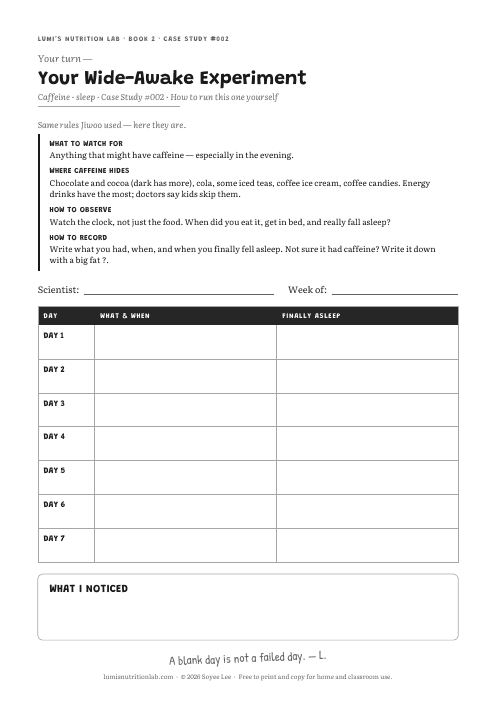
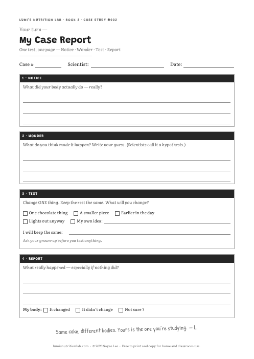
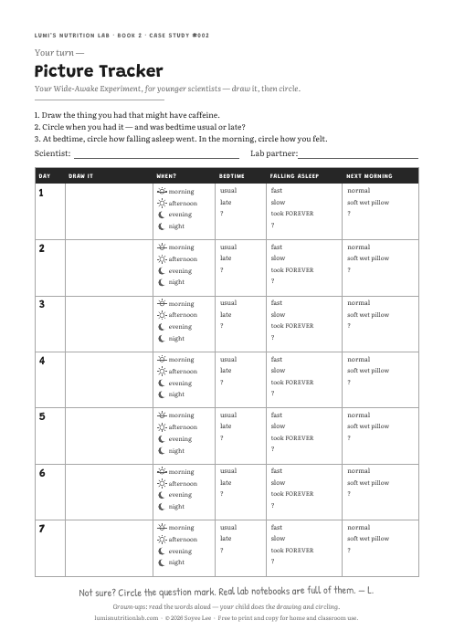

Lab Hub › Case #002 › Trackers
CASE STUDY #002 · BLANK TRACKER PAGES
Jiwoo’s week is filled in on page 67 of the book. The pages below are yours. Print as many as you need.

Ages 7–9 · one week
One week, the same rules Jiwoo used. The same blank page as page 69 — with the rules printed right on it, so it works without the book.

Ages 7–9 · one day
One page for one test: Notice · Wonder · Test · Report. For the day you change ONE thing on purpose — like Lumi’s list on page 47.

Ages 6–7 · one week, with a grown-up
For younger scientists: draw what you had, circle when you had it, then circle how bedtime and falling asleep went. Almost no writing.
All three in one file:
Print at 100% (actual size). Free to print and copy for home and classroom use.
Page 66 of the book, word for word. They’re printed on your tracker page too.
A question mark is honest data. Real lab notebooks are full of them. — L.
From For the Grown-Up Lab Partner, pages 70–72.
1 · Ask. Don’t check. The record belongs to your child. An inspected notebook stops being honest by about day three.
2 · Praise the question mark. A child who writes “I don’t know” has produced an honest result — harder and rarer than a confident one. Answer it with: “Good — you wrote down what you actually knew. That’s the whole job.”
3 · Don’t say the finding first. Most children notice something unexpected. Name it first, and they confirm your answer instead of finding their own. The cake, too — Jiwoo names that lesson herself on page 34.
Know when to stop. One week, caffeine only. If it becomes a log of everything eaten, or bedtime becomes a worry, close it and come back in a year or two. Curiosity doesn’t need a streak.
This book is about one ordinary night. Talk with your pediatrician before running the tracker if your child has trouble falling asleep, has ever had a racing-heart episode, or lives with a diagnosed condition — for a racing heart, skip the evening chocolate rather than time it. The American Academy of Pediatrics advises children skip energy drinks entirely; page 66 says so in a child’s words. Nothing here is medical advice.
This site collects nothing. The paper — and what’s written on it — stays at home. All three books’ grown-up notes →